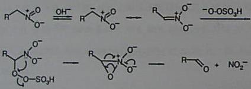

Oxone� Promoted NEF ReactionSimple Conversion of Nitro Group Into CarbonylSynthetic Communications, 28(16), 3057-3064 (1998)[ Back to the Chemistry Archive ] Instituto di Chimica Organica, Facoltà di Farmacia, Unversità degli Studi, Vida del Liceo, 06123-Perugia, Italy
† Deceased on January 1st 1998 Abstract. A mild and convenient oxidative Nef reaction using Oxone� (potassium hydrogen persulfate) is described.Following our procedure primary and secondary nitroalkanes generate carboxylic acids and ketones, respecitvely, both in good yields. Aliphatic nitrocompounds have many applications in organic synthesis, particularly as intermediates in carbon-carbon bond-forming processes 2 or as precursors of many other functional groups. Therefore, there is considerable interst in their preparation and manipulation.1 The conversion of primary and secondary nitro-compounds into the corresponding carbonyl derivatives, i.e. Nef reaction,3 is a transformation of general utility. Many different procedures have been proposed to effect this transformation, e.g. hydrolytic as well as oxidative methods. 1c,4 Herein, we report that potassium hydrogen persulfate, commercially available as Oxone�, is a convenient oxidizing reagent for the conversion of nitroalkanes to carbonyl compounds under mild conditions. Nitroalkanes are stable even in a methanolic solution containing an excess of Oxone�. The oxidative process takes place only in the presence of bases. Under these conditions, aliphatic nitro compounds are transformed into nitronates which undergo oxidation in the presence of Oxone�. Thus, secondary nitrocompounds are transformed into ketones while primary nitroderivatives give carboxylic acids. The results are summarized in the Tables. Most of the reported transformations occur with excellent yields; unexpectedly we were unable to oxidize the 5-nitro-hexan-2-ol (4) to the corresponding hydroxy-ketone. Probably, the lack of reactivity is a consequence of an intramolecular hydrogen shift from the hydroxy group to the nitronate carboanion, in a six-membered transition state, which prevents nitroderivative oxidation. In fact oxidation of 5 and 6, in which the hydroxyl group is protected, takes place and compounds 14 and 15 are obtained in 93 and 88% yield, respectively. Moreover compound 7, in which conformational rigidity prevents the intramolecular interaction between the hydroxyl function and the nitronate, readily undergoes oxidation (16, 85%). A plausible mechanism involved in the transformation of nitroalkanes into carbonyl derivatives is depicted in the Scheme.
b Isolated yields.

Infrared spectra of CHCl3 solutions were observed on a JASCO FT-IR 410 spectrophotometer. 1H and 13 C
NMR spectra of CDCl3 solutions were recorded on a Bruker AC200 spectrometer operating at 200.1 and 50.3 MHz, respectively,
in the Fourier transform mode. The carbon shifts are in parts per milliion downfield from Me4Si; FIX!(Me4Si) =
FIX!(CDCl3) + 76,9 ppm. Elemental analyses were performed on a Carlo Erba Model 1106 elemental analyzer. Column
chromatography was executed on 0.063-0.200 mesh Merck silica gel. All extracts were dried over Na2SO4. 5-t-Butyl-dimethylsilyloxy-hexan-2-one(15): IR 1706 cm-1. 1H NMR δ 0.26 (s, 6 H, (CH3)2Si), 0.79 (s, 9 H, (CH3)3C), 1.01 (d, 3 H, J = 6.6 Hz, H-5), 1.4-1.9 (m, 2 H, H-4), 2.01 (s, 3 H, H-1), 2.29 (t, 2 H, J = 6.9 Hz), 3.78 (m, 1 H, H-5); 13C NMR δ-5.0, 18.1, 19.9, 23.9, 25.9, 30.1, 33.2, 40.4, 66.8, 206.0, Anal. Calcd for C12H26O2Si: C, 62.55; H, 11.37. Found: C, 62.61; H, 11.31. 3-Acetyl-cyclohexan-1-ol(16): IR 1705 cm-1. 1H NMR δ 1.3-1.8 (m, 8 H), 2.02 (s, 3 H, CH3), 2.41 (m, 1 H, H-3), 3.61 (m, 1 H, H-1); 13C NMR δ 16.1, 21.1, 27.3, 34.8, 36.7, 49.8, 69.6, 211.1. Anal. Calcd for C8H14O2: C, 67.57; H, 9.92. Found: C, 67.64; H, 9.87. Preparation of 2-Acetoxy-6-nitro-hexane(5): To a stirred solution of 200 mg (1.36 mmol) of compound 4 in 4 mL of CH2Cl2, 100 mg of AC2O, 100 mg of NEt3 and a catalytic amount of 4-pyrrolidynopyridine were added. After 30 min. the reaction mixture was poured into water and extracted with CH2Cl2. The combined organic layers were washed with brine, dried and evaporated. Compound 5 was obtained in 95% yield as a mixture of a diastereomers and it was used without any purification. IR 1560, 1735 cm-1. 1H NMR δ 1.20 (d, 3 H, J = 7 Hz, H-1), 1.40 (d, 3 H, J = 7 Hz, H-6), 2.00 (s, 3 H, CH3CO), 4.50 (m, 1 H, H-5), 4.90 (m, 1 H, H-2); 13C NMR δ 18.9, 19.6, 20,9, 30.6, 30.8, 31.6, 31.7, 69.4, 69.8, 82.1, 82.9, 170.3. Anal. Calcd for C8H15NO4: C, 50.78; H, 7.99. Found: C, 50.84; H, 7.85. Preparation of 2-t-Butyl-dimethyl-silyloxy-5-nitro-hexane (6): To a stirred solution of 120 mg (0.81 mmol) of 4 in 1.6 mL of dry DMF, 147 mg (0.97 mmol) of TBDMSCl and 139 mg (2.03 mmol) of imidazole were added. The reaction mixture was stirred at room temperature under N2 for 12 h. Then it was diluted with water and extracted with Et2O. The combined organic layers were washed with brine, dried and evaporated. Purification of the residue and elution with CH2Cl2 gave 170 mg (80% yield) of 6. IR 1560 cm-1 NMR δ 0.25 (s, 6 H, (CH3)22Si), 0.78 (s, 9 H, (CH3)23C-), 1.21 (d, 3 H, J = 6.7 Hz, H-1), 1.52 (d, 3 H, J = 6,3 Hz, H-6), 1.5-2.2 (m, 4 H, H-3 and H-4), 3.70 (m, 1 H, H-2), 4.51 (m, 1 H, H-5); 13C NMR δ -4.8, 18.1, 19.8, 24.1, 25.9, 32.5, 32.7, 33.7, 34.1, 65.8, 66.1, 82.6, 82.8. Anal. Calcd. for C12H27NO3Si: c, 55.13; H, 10.41. Found: C, 55.19; H, 10.36. Acknowledgements. This work was supported by grants from the Ministero dell'Università e della Ricerca Scientifica e Tecnologica and the CNR, Rome. References 1. a) Seebach, D.; Coluin, E. W.; Lehr, F.; Weller, T. Chimia 1979, 33, 1. Ono, N.; Kaji, A. Synthesis 1986, 693. Rosini, G.; Ballini, R. Synthesis 1988, 833. 2. Costantino, U.; Curini, M.; Marmottini, F.; Rosati, O.; Pisani, E. Chem. Lett. 1994, 2215. 3. Nef, J. U. Liebigs Ann. Chem. 1894, 280, 264. 4. Ballini, R.; Petrini, M. Tetrahedron Lett. 1989, 5329. 5. Compounds commercially available. 6. Rosini, G.; Marotta, E.; Ballini, R.; Petrini, M. Synthesis 1986, 237. 7. Monte, W. T.; Baizer, M.M.; Little, R.D. J.Org.Chem. 1983, 48, 803. 8. Vankar, P.S.; Ratore, R.; Chandrasekan, S. Synth. Commun. 1987, 17, 195. 9. Tanaka, S.; Kohomoto, S.; Yamamoto, M.; Yamada, K. Nippon Kagaku Kaishi 1989, 1742; C.A. 112, 178190f. 10. Ballini, R.; Bosica, G. J.Org.Chem. 1994, 59, 5466. 11. Kornblum, N. Organic Reactions 1962, 12, 101. Pinnick, H. W. Organic Reactions 1990, 38, 655. 12. Meyers, A. I.; Knaus, G. Tetrahedron Lett. 1974, 1333.
|